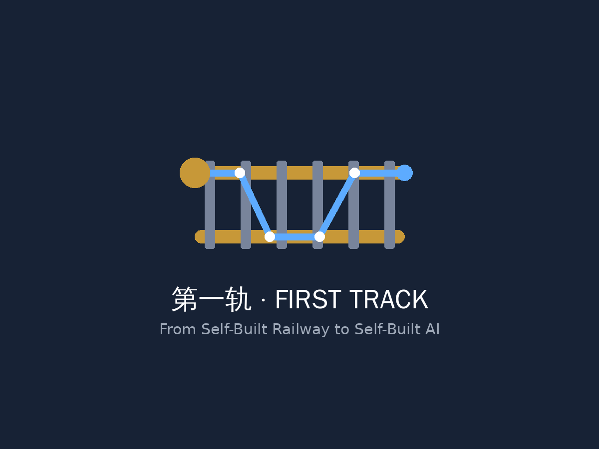
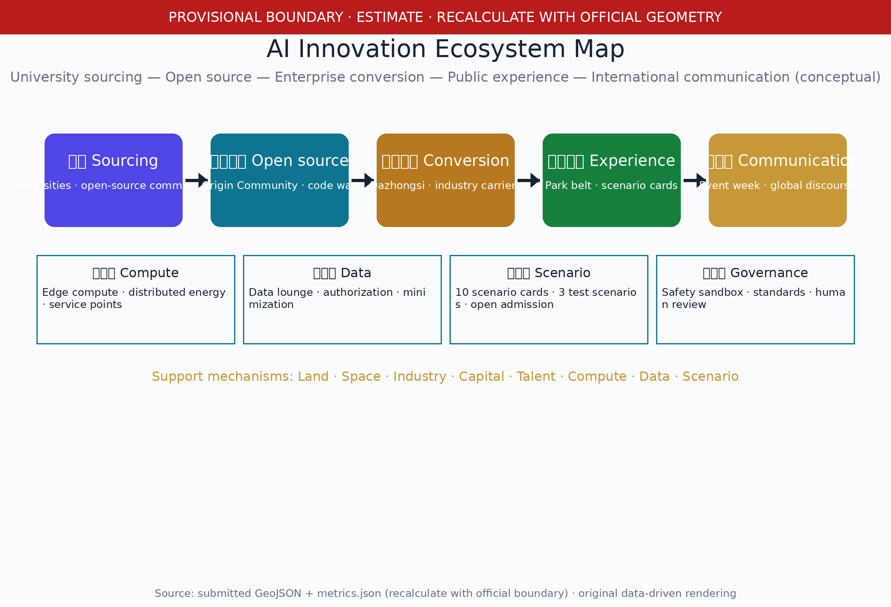

Coordinated research area
For the approx. 43.6 km² area: AI industry ecosystem, three areas-two wings synergy, future city form, and cultural narrative.
- AI innovation and talent chains
- Global case transfer mechanisms
- Brand naming and communication
Offline electronic presentation. The proposal takes the Jing-Zhang Railway built under Zhan Tianyou in 1909 — China's first trunk railway designed and built independently — as the cultural origin, transforming the Jing-Zhang Heritage Park corridor into the 'First Track' urban spine from self-built railway to self-built AI. Authority remains with the GeoJSON, metrics.json, matrices, and self-check; this page renders the overview map, three-level scope, key areas, land use, mobility, blue-green public space, building renewal, logo and visual identity, AI ecosystem map, international cases, AI scenario cards, landmarks and component library, annual events and operations, core metrics, task coverage, self-check status, sources, and assumptions in human-readable form.
The overview map combines land use, mobility, blue-green public space, buildings/renewal, and AI scenario nodes with scale bar, north arrow, graticule coordinates, and legend.
The proposal progresses from the coordinated research area, to the overall design area, to the key areas, binding industry judgments, urban renewal, and key-area design to layers and metrics.
For the approx. 43.6 km² area: AI industry ecosystem, three areas-two wings synergy, future city form, and cultural narrative.
For approx. 11.4 km² (provisional): urban renewal, land use, transport/municipal, and the Jing-Zhang Heritage Park vitality belt.
Conceptual detailed design for the three key areas: function mix, building renewal, public space, and transport organization.
The three key areas deliver conceptual spatial design and a project matrix (function/public space/slow-travel/AI scenarios/dependencies and phases); provisional geometry is not a redline.
Garden-style independent-innovation block. Qinghe innovation interface, low-carbon exchange, industry display, and green test space.
University-adjacent conversion block. Open-source release hall, results display, campus-park stitching, and station links.
Urban smart-economy block. Green composite use, four-quadrant pedestrian connectivity, and station integration.
Original logo (isomorphic rail-section × circuit-trace mark) with the First Track naming system and visual identity (colors, typography, auxiliary graphics).

Project: Centennial Jing-Zhang · First Track; Spatial spine: First Track Cultural Spine; Event brand: First Track Open Week.
Primary: slate grey→tech blue gradient; auxiliary: signal orange, rail gold; motifs: 1435mm gauge, hand-drawing geometry.
Ten complete scenario cards; 01/02/03 are test/validation scenarios (conceptual, requiring organizer approval and safety review).
Origin Community · test
Open process for model evaluation and contribution display; manual content review.
Zhongzhiyuan · test
Standards workshop and safety evaluation; human review of red-team results.
New-infrastructure node · test
Edge-compute/public-service prototype; manual quota approval.
Park belt · public
Manual verification of gap lists; no individual tracking.
Dazhongsi · events
Agent/terminal display; manual review of content and speakers.
Zhongzhiyuan · park
Aggregated environment/energy display; manual content review.
Origin Community · community
Authorized results display; unpublished results not shown.
Dazhongsi · compliance
Desensitized demo data; auditable transactions.
Community-commerce · public
Human confirmation of AI suggestions; equivalent non-AI services.
Belt public space · events
Minimized registration data; manual event review.
Six international cases (with source and license records), the AI innovation ecosystem map (sourcing—open source—conversion—experience—communication), and eight support mechanisms.
| Case | Transferable mechanism | Source / license |
|---|---|---|
| Toronto Waterfront/Quayside | Public data trust, public-interest-first governance, pilot exit | Sources & licenses in sources.json |
| Singapore Punggol Digital District | Digital twin, community-level smart services, open standards | Sources & licenses in sources.json |
| Helsinki Kalasatama | Open data catalogue, city-as-a-platform, citizen co-creation | Sources & licenses in sources.json |
| Paris Station F | Community operations, event calendar, capital-enterprise-university matching | Sources & licenses in sources.json |
| Tel Aviv innovation ecosystem | City services as APIs, cyber cluster, global talent | Sources & licenses in sources.json |
| Jing-Zhang Railway history (benchmark) | Linear heritage as an urban cultural innovation spine | Public historical sources |

Three AI pilgrimage landmarks (conceptual), the honor display system, and a 12-item public space component library with safety/heritage/accessibility/O&M boundaries.
Park vitality belt (intended point). Dialogue between the 1909 independent-rail spirit and AI independent innovation.
AI Origin Community (intended point). Honor display for developers and co-creators.
Zhongzhiyuan/Origin boundary (intended point). Display pod for AI models and scenarios.
C01 gauge seating · C02 smart light pole · C03 station-sign wayfinding · C04 rail-pattern manhole cover · C05 movable test fence · C06 dual-channel information screen · C07 accessible ramp module · C08 drinking fountain · C09 shade canopy · C10 movable planter · C11 event power outlet · C12 community service kiosk
Annual event calendar (12 items), developer community governance, scenario open admission, public experience operations, conversion pathway, responsible roles and KPIs — all conceptual.
| Month | Event |
|---|---|
| Jan | Annual AI contribution ranking |
| Feb | Developer spring co-creation meetup |
| Mar | Scenario open admission window |
| Apr | AI governance standards workshop |
| May | Open-source release hall monthly roadshow |
| Jun | Jing-Zhang culture memory season |
| Jul | Edge compute and low-carbon open day |
| Aug | International AI communication week |
| Sep | First Track Developer Festival |
| Oct | Scenario open day |
| Nov | Dazhongsi data-elements forum |
| Dec | Year-end review and next-year admission |
| Role | Responsibility | Suggested KPI |
|---|---|---|
| Organizer | Approval, resources, policy coordination | Admission pass rate; safety incidents = 0 |
| Operator | Scenario/event/space operations | Usage frequency, participation, satisfaction |
| Developer community | Content, honor, anti-abuse | Activity, contributions, complaint resolution time |
| Enterprise | Pilots and landing | Pilot conversion rate, implemented projects |
| Third-party institutions | Evaluation, audit, accessibility review | Evaluation reports, audit pass rate |
compliance_matrix.json covers Announcement 1.3/1.4/1.5 and agent.1-agent.6; standard_matrix.json and design_depth_matrix.json record status per actual completion.
Sources are in sources.json (including international cases, fonts, tools, original assets, and license records), agent_taskbook.json, data/processed/agent_fact_pack.md, and standards/references. This page loads no CDN, remote map tiles, external scripts, remote fonts, APIs, or iframes.
Assumptions such as provisional boundary (A-BOUNDARY-PROVISIONAL), pending regulatory/engineering conditions (A-CONTROLS-001), cases as desk research (A-CASES-BENCHMARK), and operations as conceptual (A-OPERATIONS-CONCEPT) are listed in assumptions.json.